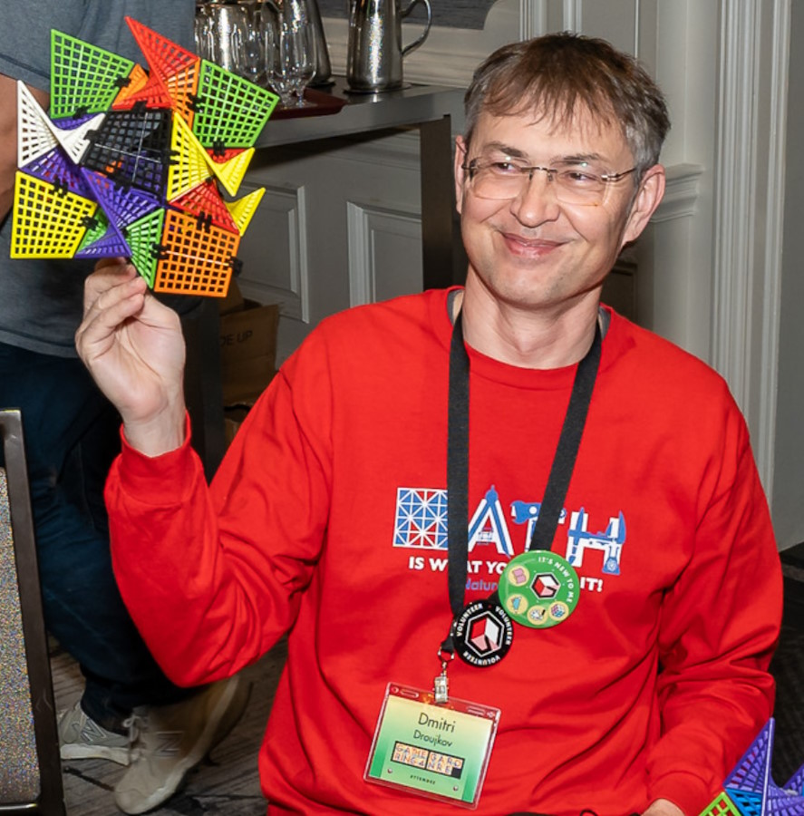
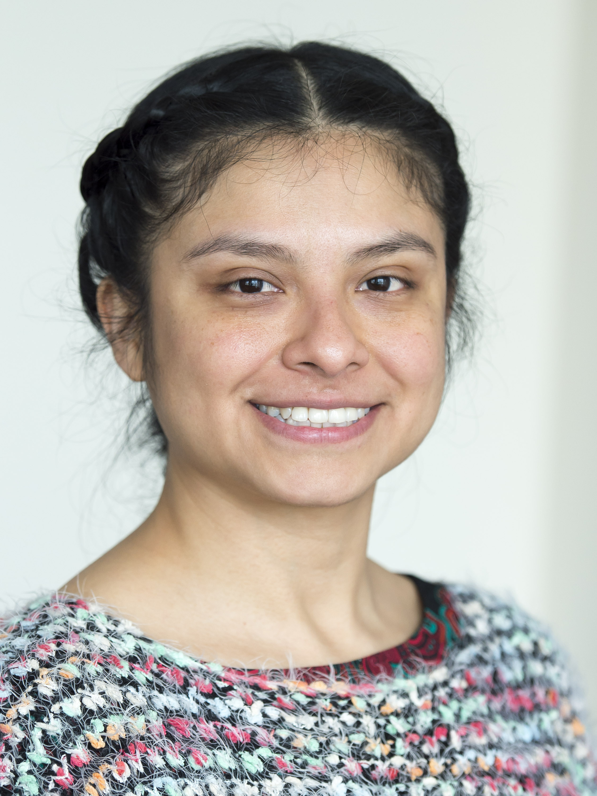
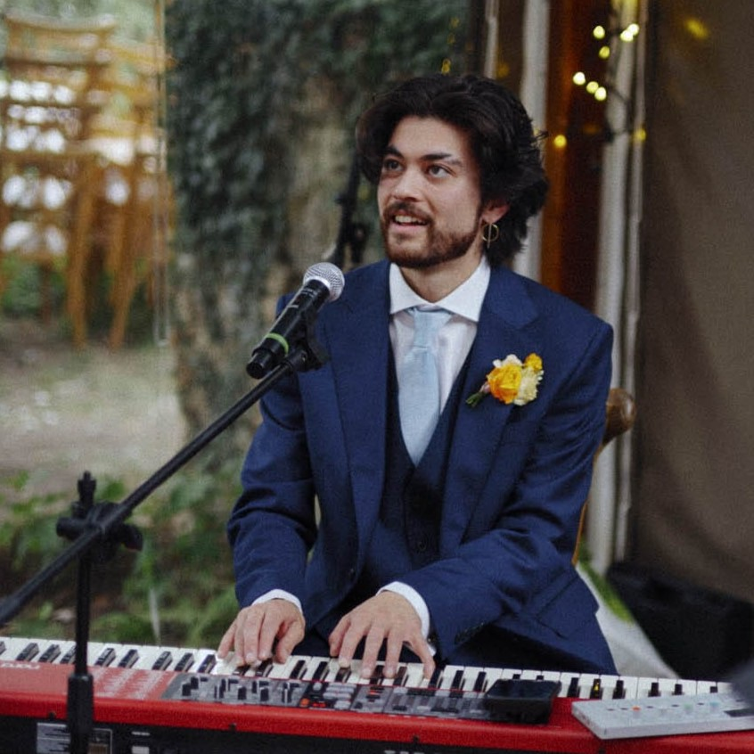
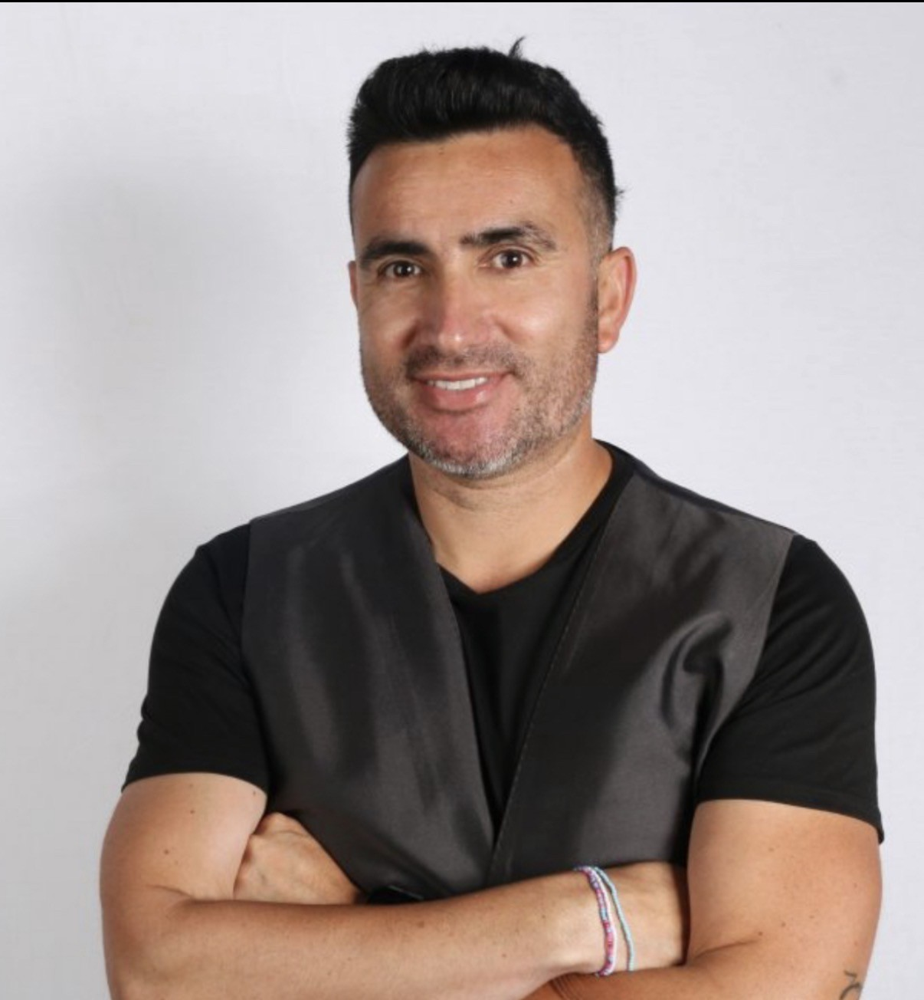
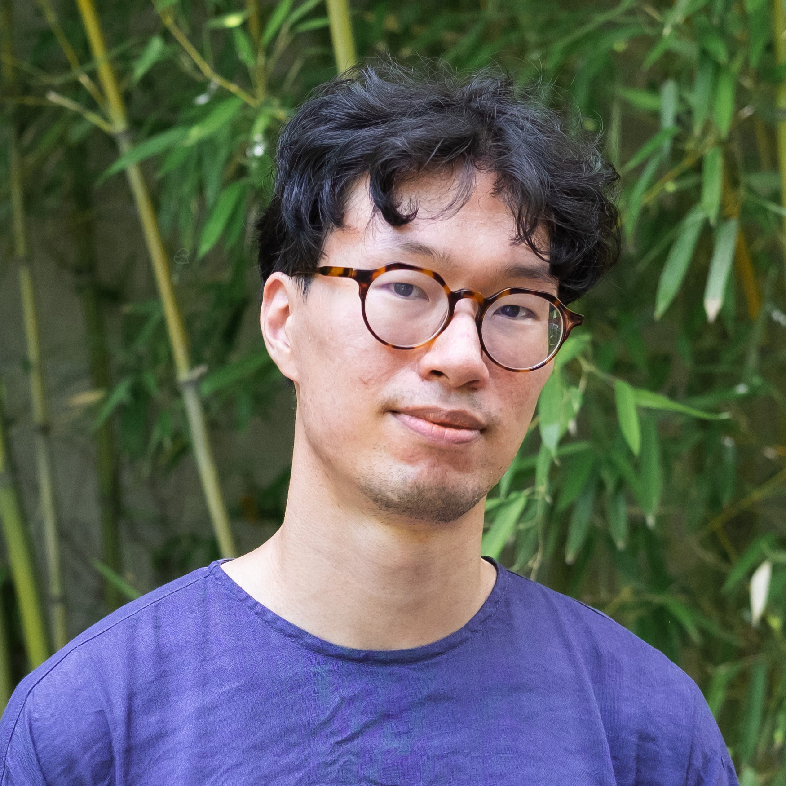

Speakers at AICSED 2026
| Benedict du Boulay is an Emeritus Professor of Artificial Intelligence at the University of Sussex. He gained a Ph.D. from the University of Edinburgh (1978). He worked in industry and as a schoolteacher prior to his PhD. His academic career continued at the Universities of Aberdeen and Sussex. His primary research area is the application of Artificial Intelligence in Education, particularly issues around modelling and developing students’ metacognition and motivation. He was President (2015-2017) of the International Society for Artificial Intelligence in Education. He co-edited the recent Handbook of AI in Education. A second edition is due out in 2027. | |
| Alma Jazmín Castillo Rodríguez is a Mathematics teacher and researcher at the CBTIS 131 (Directorate-General for Industrial and Technological Education) college in San Luis Potosí, Mexico. She has a degree in Pharmaceutical-Biological Chemistry and a diploma in Artificial Intelligence and Advanced Technologies. Her research focuses on generative AI for STEAM education, particularly intelligent tutoring systems that are aligned with Mexico's Nueva Escuela Mexicana framework. As a teacher, her main goal is to help students overcome their fear of mathematics and science, and she has mentored students in CNPYPE, Mexico's national student prototype competition. | |
 |
Dmitri Droujkov has been working in informal mathematics education for more than two decades, making mathematics enjoyable and accessible to everyone in kind ways. This goal led Dmitri to become more interested in the question, "Why is it so difficult for so many people to learn mathematics?" Dmitri is a graduate student member of the Games2Learn lab at NC State University, working at the intersection of Artificial Intelligence, Cognitive Sciences, and Education. He studies how AI can help make advanced learning more accessible in kind ways. He primarily researches affect-aware AI support for the development of metacognitive skills. |
 |
Grecia Garcia Garcia is a Cognitive Science researcher. Her interest is in external representations, interactive learning environments, HCI, tactile graphics, cognitive learning analytics and AI. Grecia obtained her PhD in Cognitive Science at the University of Sussex. Her first degree was in Computer Science from the National Autonomous University of Mexico. She is currently an Associate Research Fellow at the University of Sussex, and affiliated with the Cognitive Science of Tactile Graphics project. |
| Daniel Hajas is Innovation Manager at UCL Computer Science, working at the intersection of Human–Computer Interaction (HCI), accessibility, and disability innovation. His work explores how interactive technologies can support meaningful, engaging, and equitable experiences for disabled people, informed by both research and lived experience of blindness. Daniel obtained an MPhys in Theoretical Physics and a PhD in Informatics from the University of Sussex. His research interests include accessible data visualisation, haptic displays, and tactile graphics, as well as accessible and inclusive design. He combines academic inquiry with practical innovation, collaborating across academia, industry, and the disability community to shape inclusive technologies and experiences. | |
 |
Chris Luu is a musician and PhD student at the University of Sussex. His research explores novel ways to teach music within digital game-based learning environments, with a focus on pedagogical systems that utilise cognitive theories to support the development of piano proficiency by adaptively building richer associations with musical content. |
| Charlotte Richardson is finalist student in Computer Science and Artificial Intelligence and incoming PhD researcher at the University of Sussex. Her PhD project is about Automatic Segmentation and Multimodal Pattern Matching of Language Signs for Imitation-Based Learning. | |
 |
Ronnie Videla holds a PhD in Education with a specialization in Cognitive Science from the Autonomous University of Madrid, Spain. He is a Postdoctoral Researcher at the Embodied Design Research Laboratory, University of California, Berkeley (USA), and an Associate Researcher at Universidad Santo Tomás, Chile. His research focuses on Embodied AI and the inclusive design of educational technologies and learning environments through interdisciplinary collaboration across neuroscience, psychology, education, and engineering. He collaborates with R&D centers in New Zealand, the United States, Spain, and England. He has also received training in the foundations of cultural biology under the guidance of Humberto Maturana. |
 |
Jonathan Zong is an Assistant Professor of Information Science at the University of Colorado Boulder, where he leads the Data & Design Group. He is also a Faculty Associate at Harvard's Berkman Klein Center for Internet and Society. In his research, Jonathan partners with blind collaborators and study participants to co-design accessible interfaces for non-visual data exploration. He has also developed systems and frameworks for technology refusal and data ethics, supporting communities to resist harmful data collection practices. His work has been recognized by the MIT Morningside Academy for Design Fellowship, the Paul and Daisy Soros Fellowship for New Americans, and Forbes 30 Under 30 Scientists. |